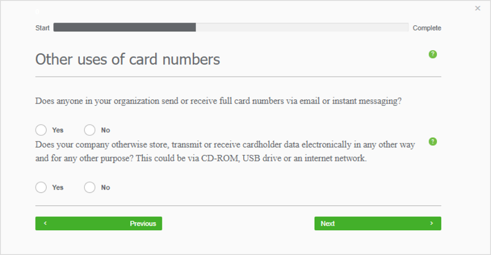

Welcome to the Clover Security Learning Center
Find what you’re looking for from the menu below
The Clover Security portal has been designed to be as intuitive as possible. When you log in you will be guided through your compliance reporting process from start to finish. Despite this, merchants have told us that reporting compliance is complicated and can be confusing. So, we’ve put together the content in this guide to help where we can.
Remember, you can always contact our dedicated support team on the details found in the menu if you get stuck.
Use the navigation menu below to explore our learning center.
Logging In And Registering
When you are enrolled into Clover Security you will receive two welcome emails like the one you see to the right. The first email will include your username for the portal. The second one will ask you to set your password.
1. Click ‘Set password here’ from the password email.
2. You will be asked to choose a password for your portal access. Input your password and select ‘UPDATE PASSWORD’.
SET YOUR PASSWORD
LOGIN WITH NEW CREDENTIALS

3. You will then need to log into the portal with the new credentials you just set
4. Upon first login you will be asked to first review and accept the terms and conditions and then update your credentials – select a new username and confirm your email address.
5. You will then be brought to the first page of your profile.
UPDATE YOUR DETAILS
REGISTER ON THE PORTAL

Didn’t receive a welcome email? No problem, simply navigate to cloversecurity.com and select ‘Register’
On the next page you will be prompted to input your Merchant ID and also verify the security code on the right-hand side. We will then send login credentials to the registered email address associated with the Merchant ID you input.
If you do not receive an email, you will need to contact our support desk.
SET YOUR PASSWORD
LOGIN WITH NEW CREDENTIALS
UPDATE YOUR DETAILS
REGISTER ON THE PORTAL
Completing Your Profile
Your business profile is a series of questions about how you accept payments in your business. Its purpose is to help us understand the level of risk your business is exposed to.
Each question will be presented to you on screen. You need to answer to the best of your knowledge.
1. Questions include:
The method by which you accept payments The card machines you use Questions in relation to risky security practices
The card machines you use
Questions in relation to risky security practices
Select the options that apply to you and click ‘Next’.
The questions will vary depending on your previous answers so please ensure your answers are accurate.
If you are stuck, help is available via the question mark icon in the top right of the screen. Alternatively, you can always contact our support team who will be happy to assist.
When you are finished you will be brought to your dashboard which will prompt you on your next steps.
ANSWERING QUESTIONNAIRE
Conducting A Network Scan
Depending on how your payment environment is set up, you may be required to run regular scans on your network to maintain your compliance.
Depending on how your payment environment is set up, you may be required to run regular scans on your network to maintain your compliance.
If your payment terminal is connected via the internet, it’s important to regularly check your internet connection for vulnerabilities. The scan needs to be run every 90 days to satisfy the requirements of the PCI DSS.
When logged in, you be presented with your dashboard.
Your next steps box in the top left will alert you to what you need to do.
Also the ‘Be scan compliant’ widget will also show that you need to take action.
1. Click ‘Begin step’ in the next steps box to begin.
2. On the next page select ‘Schedule Scan’
1. BEGIN STEP

2. SCHEDULE SCAN

You will then be brought to the scan scheduler page.
Here you will be asked for your Internet Protocol (IP) address This is a series of numbers and dots that is your address on the internet.
3. To find your IP Address:
Open an internet browser (e.g., Chrome, Firefox, Internet Explorer) on a device connected to the same internet connection as your card terminal Search the web for “What is my IP address?” The internet search will return the address
Search the web for “What is my IP address?”
The internet search will return the address
Note: it is the IPv4 address that is needed, not the IPv6. The IPv4 address will be 12 numbers separated by a dot (e.g., 123.123.123.123. The IPv6 is much longer and includes numbers and letters
3. FIND YOUR IP ADDRESS

4. Input that address into the bar and click ‘Add’
(Alternatively, you may have an e-commerce store, in this case you will need to scan your domain instead e.g.: www.yourwebsite.com)
Note; it is the IPv4 address that is needed, not the IPv6. The IPv4 address will be 12 numbers separated by a dot (e.g., 123.123.123.123. The IPv6 is much longer and includes numbers and letters
4. INPUT IP ADDRESS

Schedule the scan date for as soon as possible and confirm whether or not you use a load balancer. If you are unsure if you use a load balancer more information is available via the help icon.
5. Finally, scroll to the bottom and review the terms and conditions. Once you are happy, click that you agree and then click ‘Schedule scan’.
Reviewing The Scan
The scan will now run on your network and will complete within 24 hours. It will not effect or intentionally alter your network and you can continue to work as normal while it runs.
Once complete you will need to log back in to the portal to confirm the scan is correct and final. This is known as ‘Attesting’ to your scan.
When you log back into the portal after the scan has run, you will be prompted on what to do by the box in the top left.
6. Click ‘Begin Step’ to review the scan results.
4. INPUT IP ADDRESS

BEGIN STEP

SCHEDULE SCAN

FIND YOUR IP ADDRESS

INPUT IP ADDRESS

REVIEWING THE SCAN RESULTS
Conducting A Group Scan
If your business has many locations that need to be scanned as part of your PCI Compliance, you can conduct a Group Scan on a number of locations at once. You must first create the group of Domains/IP Addresses to be scanned before scheduling the scan.
Your next steps box in the top left will alert you, also the ‘Be scan compliant’ widget will also show that you need to take action.
1. Click 'Begin step' in the next steps box or 'Manage' from the 'Be scan compliant' widget to begin.
2. On the next page select ‘Manage multiple domains / IP addresses’
3. Make sure you’re on the 'Manage Group Scanning' tab on the next page and select 'Add a Group'. Give a name to the group you wish to scan and select if the IP addresses to be added are dynamic or static (if you are unsure you will need to check with your internet service provider). Once done select 'Submit'
4. Now the group is created you will need to add the IP addresses to the group. Click the three dots to the right and select 'Edit Group'. On the next page select 'Add New Item'
5. Input the relevant Domain/IP Address in the box provided and the corresponding Merchant ID number it applies to. Fill out the description if applicable and select 'Submit'. The added element should now appear in the list below. Repeat this process to add all relevant Domains/IP Addresses
6. When this is done, select 'Schedule' to schedule the scan. See Conducting a Network Scan for more information on this process.
BEGIN STEP

MANAGE MULTIPLE
ADD A GROUP

ADD DOMAINS/IP’S TO THE GROUP
SUBMIT AND SCHEDULE

Network Scanning Troubleshooting
At times when you run a scan on your network you may need to review certain items before it can be considered “compliant”
1. When you login you will be presented with your dashboard where your next step will highlight the need to Review your scan results. Click 'Begin Step'
Reviewing The Scan
From this menu you can review the scan that has just run.
Status is the current overview of the scan. In this example there is a special note the user must review.
Domains lists all domains (IP addresses) or host names (e-commerce store) that were covered by the scan.
Related Hosts are areas that the scan uncovered that were not included in the scan. You may need to review this area.
Vulnerabilities are areas that scan uncovered that must be reviewed.
Special Notes are any comments or mentions the scan team want to bring to your attention. YOU MUST CLICK INTO AND REVIEW A SPECIAL NOTE FOR THE SCAN TO PASS.
See below for more information.
You will need to review to see if there is anything that needs your attention from any of the menu items. If the scan has not passed, you will need to address the highlighted items and rerun the scan.
Once you have reviewed the items, and there is nothing outstanding click ‘Confirm and attest scan.’
Special Notes
Often your scan will have passed subject to a Special Note. This means that you must confirm or review certain item(s) in order for the scan to be considered ‘Passed.’
Special Notes usually appear when the scan has picked up software that is in use on your network and is using what’s called an ‘Open Port’. This is essentially a hole on your network that could potentially be exploited by a cybercriminal.
We need you to confirm that this software using the Open Port is secure and/or does not come in contact with the cardholder data being processed on the network.
Please ensure you check the scan review page for the presence of Special Notes. If one appears as shown on the right:
Click the warning symbol to review
Click the ‘Declaration’ button that will appear beside the Open Ports found
On the next page you will need to provide more information about the open port that has been found i.e. what software is using and confirm that it is secure and/or does not interact with the cardholder data being processed. Click 'Submit' when done.
Your answers will now appear on the Status page. When finished, click 'Confirm and Attest' to resubmit your scan.
Your Special Notes will then be reviewed by a human agent within 1 - 4 hours. If satisfied with your answer(s) the scan will be confirmed as a pass. If not, further notes will appear on your account that must be addressed.
If at any point you are unsure as to the security of the port you are declaring it’s always a good idea to check with your IT provider or whoever maintains your network or your internet service provider. The PCI helpdesk is also on hand to assist at any point.
REVIEWING SCAN RESULTS

REVIEW YOUR SCANS MENU

REVIEW YOUR SCANS MENU
SCHEDULE SCAN

FIND YOUR IP ADDRESS